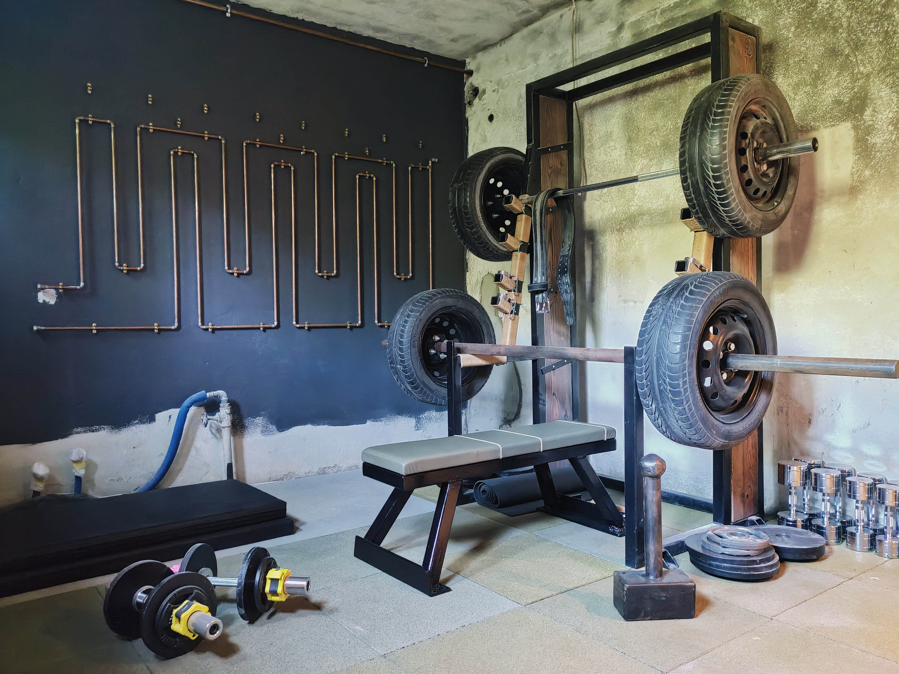

Right after finishing my rack (see the previous post) I had to move out of a rented house and search for a place of my own. This gave me the perfect opportunity to finally build a gym tailor-made for me!
The only missing piece to assemble all the necessary equipment for my routine was a gym bench. After a long process of moving to a new home (and what a process it was) I managed to accumulate enough willpower to create one. Behold:

The bench, uses 4mm thick 50x50mm steel beams leftover from the rack. The rest is made out of scrap I found during the renovation. As a transport mechanism I welded a dough roller to the base :D, and it works pretty well. The bench is topped with 50mm solid wood plank cushioned with thin gym mat and upholstered with leather. I couldn't find a single piece one, so I sewed one together. The last image on the right shows a DIY leather punch made from some scrap metric rod. The rod was made from mild steel, but it does the job much better than expected. I have to brag — the leather punch’s five 2x2 mm teeth were ground manually with an angle grinder :D
Behold the new gym in the new home (in progress tho):

Expect many more home oriented projects from now on, since this has (willingly or not) become almost a full-time job :D (e.g. the custom copper radiator on the wall :))